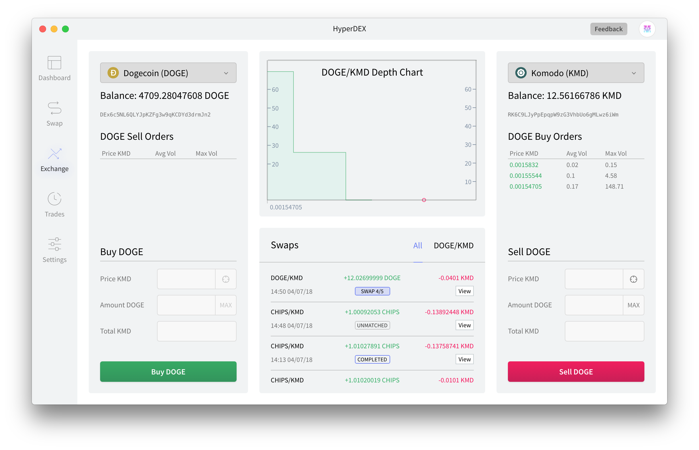

Change Log (HyperDEX)¶
Note
Keep in mind that HyperDEX is currently in beta release. Although the risk of loss of funds is minimal, it could take some troubleshooting/contact with our supportstaff to resolve issues. Only trade in real currency if you can take that risk. We recommend trading in the test currencies BEER and PIZZA instead. You can get BEER for free here.
Remember to report issues through the Feedback button in the app.
Links
0.4.0¶
- Drop support for macOS 10.9 4600c1a
- Remove
QMCcurrency (Its Electrum servers are down) 6c706d9- Remove
BCBCcurrency (Its Electrum servers are down) ca25377- Update Electrum servers and some currency data (#588) ca25377
- Update to BarterDEX Marketmaker v1.0.1096 b3c6f0b
- Add “Debug” menu item to show the file of the current portfolio (#579) e1aae1f
0.3.0¶
- Add Pungo Token (
PGT) currency. b84139d- Remove
DNR,ARG,MAC, andCALLcurrencies. See #577 (comment). 69b388d- Update LTC and BCH Electrum servers. 69b388d
- Fix the dashboard price history graph. b0d9d7d
- Move enabled currencies from the app settings to the portfolio data. It is automatically migrated. This means portfolios can have different enabled currencies. 37996ed
- Update to BarterDEX Marketmaker v1.0.1026. d04da2e
0.2.1¶
- Make the swap list rows clickable. You now click anywhere in the row instead of the “View” button. 5768b3e
- Add filters to the trade history. 6074f21
- Add a copy button to the modal that shows your seed phrase. `be63d25 <>https://github.com/atomiclabs/hyperdex/commit/be63d250e049fb6d75e2d35e9bc3dc8bcb44048c`__
- Fix a small zero being accidentally shown after the wallet currency price. 9d9769e
- Fix the price history fetching error handling. fb23e32
- In the Dashboard view, show 6 fractional digits for currencies worth less than 1. 1cab80f
- Update to BarterDEX Marketmaker v1.0.861. 700fed4
0.1.4¶
- Fix
Document update conflicterror. (#531) a4a5914- Silence
new Buffer()deprecation warnings on macOS and Window (but not on Linux). 5036501- Fix Gemini dollar (GUSD) fiat price. (#538) 406c639
- Persist the window size and position. (#534) 420a443
- Rename
EQLtoEQLIin the list of default currencies. 5750560- Warn about withdrawing the whole balance. (#533) 20b2834
0.1.0¶
- Update wording Alpha => Beta a48d294
- Update Alpha => Beta references in translation files fd4c844
- Add Gemini dollar (GUSD) 8c4eace
- Add Old Capital (OCALL) 35f95d9
- Add Capital GAS (CALLG) 34f7611
- Add more currencies and update some Electrum servers 4b9d397
- Add PGP badge to readme linking to Keybase proofs a563f84
- Fix dashboard currency percentage price change 85b3280
- Update BTC donation address. 59cf1fd
0.1.0-alpha.13¶
Note
If you have used any previous beta version, you need to delete your trade history as this version has an incompatible format. Right after opening this version, go to the “Debug” menu and choose “Delete Trade History”.
Changes¶
- GTC orders. 0040d04
- All orders are now Good ‘Till Cancelled (GTC) orders. If you place an order it will stay pending and keep re-broadcasting the order every 10 minutes until it either matches or the user cancels it. Read more .
- Only show open orders on the exchange view. a95f256
- Because of GTC, we now only show open orders in the Exchange view. Go to the Trades view to view completed/failed orders.
- Add donate button. e2660ef
- Add ability to sort orders in the Trades view. d505b8e
- Improve login performance. 8aec0fa
- Disable Debug Mode by default in production. You can re-enable it in the
Helpmenu. e00eff5- Update to BarterDEX Marketmaker v1.0.543. 34d88e4
0.1.0-alpha.12¶
Note
If you’re upgrading from alpha.10, you need to delete your trade history as this version has an incompatible format. Right after opening this version, go to the “Debug” menu and choose “Delete Trade History”.
Changes¶
- Switch from CoinMarketCap API to CoinGecko. No more CoinMarketCap-related errors. dbecfaf
- Improve handling of Marketmaker crashing or being unavailable during login. f12fe3c
- Add initial macOS Touch Bar support. d494ad4
- New Crowdin translations. 3a56e46
- Fix icon for Trades view. 36725ec
- Fix window height on Linux. 631e3b2
- Make the hit-target for the modal close button larger. ece080d
0.1.0-alpha.11¶
Note
If you have used any previous beta version, you need to delete your trade history as this version has an incompatible format. Right after opening this version, go to the “Debug” menu and choose “Delete Trade History”.
Changes¶
- Support for ERC20 tokens. cbfce65
- Add Unicoin (MYTH) to default currencies. 7779532
- Add ability to export trade history to CSV. For example, for use in Excel. (#450 <https://github.com/atomiclabs/hyperdex/pull/450>) `5bb5c3b
- In the swap details modal, link transactions to block explorer web pages. (#453) 7bd9644
- Limit the amount of swaps shown in the “Recent Swaps” box in the Exchange view. (#445) 3e97ea9
- Render numbers with decimal instead of exponential notation in number input fields. (#434) 8c612c5
- Swap details modal tweaks. 6654b8d 5e7512d
- Add “Help” menu item to report security issues. cfdbb9a
- Fix duplicate labels in the portfolio charts. (#443) 2c9df69
- Use official HyperDEX PGP key when signing checksums. 6f57087
- Update to BarterDEX Marketmaker v1.0.342. e3538f8
- Translation updates. (#`448 <https://github.com/atomiclabs/hyperdex/pull/448>`_) e20fa6d
0.1.0-alpha.10¶
- Automatically fixes stuck swaps. 1d4a0bc
- Add ability to view the portfolio seed phrase. 5634172
- Add ability to rename and delete the portfolio. 5634172
- Add GLX Token (GLXT) currency. 9ddb1f3
- Add Chainmakers (CHAIN) currency. 8fc85bc
- Add PACcoin ($PAC) currency. 31d55a7
- Add Rapture (RAP) currency. 478bb91
- Update some Electrum servers. ca94790
- Fix order selection calculation. 87fa824
- Fix Portfolio menu being visible even when logging out. 406c7d1
- Fix the dropdown of the currency selector being cut off and make settings scrollable. 90cbbb6
- Reset inputs in the Exchange view when currency changes. 98f53c2
- Update to BarterDEX Marketmaker v1.0.315. b37b40e
0.1.0-alpha.9¶
Light theme¶
You can now choose a new light theme in the settings. On macOS, it follows the system dark mode by default.
{kind=link}
Localization¶
HyperDEX is now available in 22 languages!!!
It uses your system language by default. Please let us know if the auto-detection is not working.
We’re also looking for feedback on the translations. Report any mistakes or improvements to us on the Discord channel. Also, let us know if you want to help add additional languages or want to help maintain an existing language. You can find the translations here.
Languages:
- Arabic
- Bengali
- Chinese Simplified
- Chinese Traditional
- French
- German
- Hindi
- Indonesian
- Italian
- Japanese
- Korean
- Norwegian
- Persian
- Polish
- Russian
- Spanish
- Swahili
- Swedish
- Thai
- Turkish
- Urdu (Pakistan)
- Vietnamese
0.1.0-alpha.8¶
- Update to BarterDEX Marketmaker v1.0.270 which contains a bug fix to improve order match rate. 74624bb
- Improve Content Security Policy 5d27515
- Add translation files 00b4f84
- Add icons for currencies BCBC, MNZ, DNR, EQL 3e3ff11
0.1.0-alpha.7¶
- We have decided to remove the “Cancel” button from the Trades view. It was not working as expected and it doesn’t look like it going to be possible to fix it until Marketmaker v2 (which will not be done soon). 60d9fee
- Enable the EQL currency by default. 280f7dd
- Update to BarterDEX Marketmaker v1.0.261. 27ca8b2
- Correctly handle inverse values for sell orders. 167b892
- Fix stuck pending swaps. 0ed0acd
- Fix not being able to type space in the seed phrase input. 856c971
- Fix USD calculation in the withdraw modal. a4fec46
- Fix issue when clicking the “Max” button in the withdraw modal. 37a35f5
- Split Settings into Portfolio and App Settings. 9f3f1a7
- Add some stats to the Trades view. 7d996b4
- Fix problem with having currencies with a number in the name enabled. e6b435b
0.1.0-alpha.6¶
Note:
Don’t download this version if you have currencies enabled where the symbol contains a number, see issue: #356
- Support for the Equaliser (EQL) currency. commit: 1c3930b
- Displays order failures using a system notification. commit: 621d934
- Shows the worth of a swap in USD in the order column in the Exchange view. commit: 7960014
- Fixed a crash caused by number some inputs having the incorrect data type. commit: 991c988
- Now gracefully handles Electrum errors. commit: a179fb8
- Added a debug menu item to delete swap history. commit: 0d40526
- Updated to BarterDEX Marketmaker v1.0.238. commit: fb934da
0.1.0-alpha.5¶
- Fixed clicking orders in the order book.
- Fixed another issue with number inputs.
0.1.0-alpha.3¶
- Fixed pasting a multiline seed phrase in the “Restore Portfolio” view.
- Fixed all the problems with number inputs.
- Added icons for all the Komodo asset chains. You can now trade
PIZZAandBEERin style!- The Buy/Sell buttons are now disabled while the order is placed to prevent accidental double-buy and to reduce chances of marketmaker problems.
- HyperDEX will present a confirmation dialog if you try to quit while you have in-progress swaps.
- Various user-interface improvements.
- All changes: Github compare
0.1.0-alpha.2¶
- Various user-interface improvements. Larger text in some places. Less scrollbars.
- Added the Denarius (DNR) currency.
- Fixed the Electrum port for
BTCHandCRYPTO.- Fixed a problem with typing zero after a decimal point in input fields Issue #240 on Github repo
- The SnowGem currency ticker was incorrect and was changed from
SNGtoXSG. You need to enable it again if you had it enabled previously.- The
HODLandHODLCcurrencies are temporarily removed while we sort out some confusion. Issue #289 on Github repo- Now shows the “View” button also in the “Open Orders” view.
- Added a
Copy Swap Debug Databutton to the swap modal dialog, so you can more easily share debug data with us.PIZZAandBEERno longer shows a price since they’re just test currencies.- All changes: Github compare